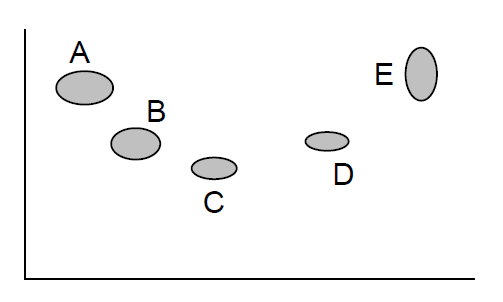
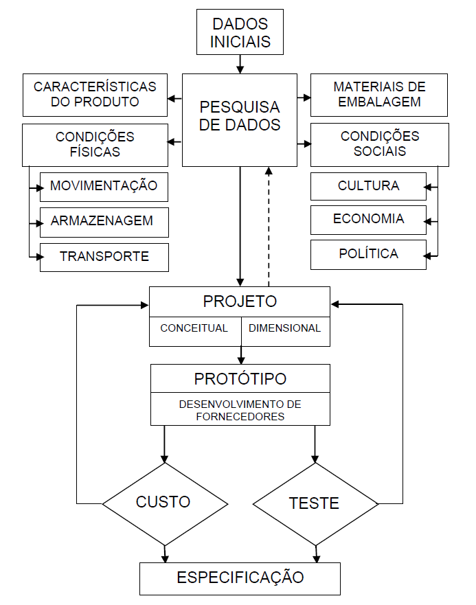

Já dissemos, assustadoramente, que “a qualidade não interessa”, dando rapidamente a explicação: o que interessa é a relação qualidade/custo. Podemos simplificar mais essa expressão dizendo que, para dada qualidade, o que interessa é o mínimo custo. Esse custo refere-se ao da embalagem mais os custos de distribuição que são afetados pela embalagem, especialmente o de perdas e danos, além dos relativos a ineficiências devidas, por exemplo, a dificuldades de movimentação e de empilhamento, a baixo aproveitamento de espaços em transporte e armazenamento. Definida, porém, a qualidade (com certo nível de aceitabilidade), esses custos de perdas e ineficiências ficam eliminados, de forma que se pode trabalhar com uma variável mais controlável: os preços. O preço da embalagem e os de logística, que devem, então, ser minimizados. Qual o critério, então, para se saber se um preço (ou um custo, ainda genericamente) é ou não aceitável? Algumas empresas trabalham com a relação “valor da embalagem / valor do produto embalado”. Essa relação pode ir de 0,01 a mais de 1, pois há casos em que a embalagem custa mais que o produto. Dado um acúmulo de experiência com algum produto específico, pode-se definir uma relação historicamente aceitável. O critério geral, porém, para a minimização dos custos é o da comparação de alternativas. Uma embalagem pode ser aceita, tradicionalmente, na empresa, como muito barata. Mas se alguém traz uma nova idéia, que atende todos os requisitos de qualidade (conformidade às especificações) e é mais barata, a alternativa anterior pode ser considerada cara.
Os economistas costumam traçar curvas. Se tivermos o custo da qualidade no eixo x e o custo de perdas e ineficiências no eixo y, a curva ficará assim, com a curva da soma de custos traçada acima:
O custo total, x + y, apresentará um valor de mínimo, e é esse o que nos interessa. Não existe, porém, essa curva: existem algumas alternativas, com certa dispersão de valores, de forma que a “curva” fica assim:

Está claro que a alternativa C será a escolhida.
O processo pelo qual se faz essa análise é esquematizado abaixo.

Gostaria de chamar atenção para uma seta tracejada, que vai de volta, do PROJETO para a PESQUISA DE DADOS. Ela significa que, às vezes, no decorrer do projeto da embalagem, pode-se notar uma necessidade de alterar algo no produto, ou no ambiente de distribuição, por exemplo. A condição ideal, para um projeto otimizado, é que haja uma interação entre o projetista da embalagem e o do produto, pois é comum que se resolvam grandes problemas de embalagem e acondicionamento de cargas com pequenos ajustes no produto (reforços, fixações, dimensões).